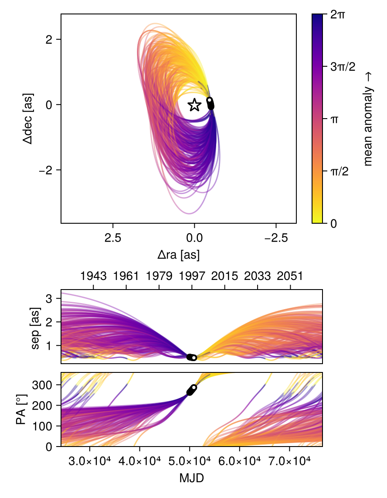
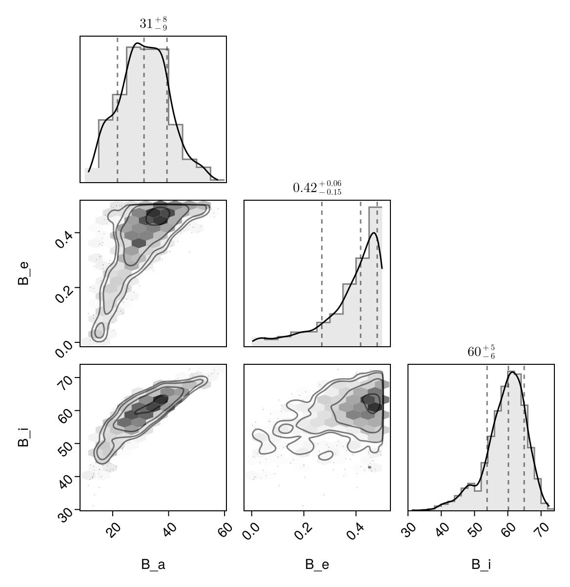

Fit with a Thiele-Innes Basis
This example shows how to fit relative astrometry using a Thiele-Innes orbital basis instead of the traditional Campbell basis used in other tutorials. The Thiele-Innes basis is more suitable then Campbell for fitting low-eccentricity orbits, because it does not have the issues where ω, Ω, and tp become degenerate as eccentricity and/or inclination fall to zero.
At the end, we will convert our results back into the Campbell basis to compare.
using Octofitter
using CairoMakie
using PairPlots
using Distributions
astrom_like = PlanetRelAstromLikelihood(
(epoch = 50000, ra = -505.7637580573554, dec = -66.92982418533026, σ_ra = 10, σ_dec = 10, cor=0),
(epoch = 50120, ra = -502.570356287689, dec = -37.47217527025044, σ_ra = 10, σ_dec = 10, cor=0),
(epoch = 50240, ra = -498.2089148883798, dec = -7.927548139010479, σ_ra = 10, σ_dec = 10, cor=0),
(epoch = 50360, ra = -492.67768482682357, dec = 21.63557115669823, σ_ra = 10, σ_dec = 10, cor=0),
(epoch = 50480, ra = -485.9770335870402, dec = 51.147204404903704, σ_ra = 10, σ_dec = 10, cor=0),
(epoch = 50600, ra = -478.1095526888573, dec = 80.53589069730698, σ_ra = 10, σ_dec = 10, cor=0),
(epoch = 50720, ra = -469.0801731788123, dec = 109.72870493064629, σ_ra = 10, σ_dec = 10, cor=0),
(epoch = 50840, ra = -458.89628893460525, dec = 138.65128697876773, σ_ra = 10, σ_dec = 10, cor=0),
)
@planet b ThieleInnesOrbit begin
e ~ Uniform(0.0, 0.5)
A ~ Normal(0, 10000) # milliarcseconds
B ~ Normal(0, 10000) # milliarcseconds
F ~ Normal(0, 10000) # milliarcseconds
G ~ Normal(0, 10000) # milliarcseconds
θ ~ UniformCircular()
tp = θ_at_epoch_to_tperi(system,b,50000.0) # reference epoch for θ. Choose an MJD date near your data.
end astrom_like
@system TutoriaPrime begin
M ~ truncated(Normal(1.2, 0.1), lower=0)
plx ~ truncated(Normal(50.0, 0.02), lower=0)
end b
model = Octofitter.LogDensityModel(TutoriaPrime)LogDensityModel for System TutoriaPrime of dimension 9 and 9 epochs with fields .ℓπcallback and .∇ℓπcallback
We now sample from the model as usual:
using Random
Random.seed!(0)
results = octofit(model)Chains MCMC chain (1000×24×1 Array{Float64, 3}):
Iterations = 1:1:1000
Number of chains = 1
Samples per chain = 1000
Wall duration = 4.72 seconds
Compute duration = 4.72 seconds
parameters = M, plx, b_e, b_A, b_B, b_F, b_G, b_θy, b_θx, b_θ, b_tp
internals = n_steps, is_accept, acceptance_rate, hamiltonian_energy, hamiltonian_energy_error, max_hamiltonian_energy_error, tree_depth, numerical_error, step_size, nom_step_size, is_adapt, loglike, logpost, tree_depth, numerical_error
Summary Statistics
parameters mean std mcse ess_bulk ess_tail ⋯
Symbol Float64 Float64 Float64 Float64 Float64 Flo ⋯
M 1.2241 0.0970 0.0044 481.6075 440.2016 0. ⋯
plx 49.9992 0.0203 0.0008 652.7253 431.1736 1. ⋯
b_e 0.3798 0.1169 0.0068 297.5315 304.8818 0. ⋯
b_A 207.6669 680.5898 56.5110 151.3725 408.4132 1. ⋯
b_B -693.4035 233.8637 16.8824 190.6027 223.1756 1. ⋯
b_F 1308.1848 514.0636 33.6862 221.1391 166.4295 1. ⋯
b_G 357.2476 294.0487 23.2225 167.9620 255.1172 1. ⋯
b_θy -0.1263 0.0173 0.0007 658.2628 615.8228 1. ⋯
b_θx -0.9938 0.0914 0.0035 693.2197 665.6638 1. ⋯
b_θ -1.6972 0.0130 0.0005 710.2393 712.2034 0. ⋯
b_tp 12378.8828 33789.0796 2175.3498 284.5024 401.0648 1. ⋯
2 columns omitted
Quantiles
parameters 2.5% 25.0% 50.0% 75.0% 97.5 ⋯
Symbol Float64 Float64 Float64 Float64 Float6 ⋯
M 1.0343 1.1589 1.2244 1.2904 1.414 ⋯
plx 49.9604 49.9859 49.9990 50.0139 50.037 ⋯
b_e 0.0542 0.3282 0.4177 0.4680 0.498 ⋯
b_A -1007.7261 -323.7016 191.4577 778.5377 1333.594 ⋯
b_B -1062.8900 -882.6340 -711.5386 -528.5722 -229.737 ⋯
b_F 352.4297 909.1297 1325.4182 1672.7281 2339.015 ⋯
b_G -236.3953 152.7755 400.2264 605.2930 781.365 ⋯
b_θy -0.1608 -0.1374 -0.1261 -0.1144 -0.093 ⋯
b_θx -1.1845 -1.0506 -0.9908 -0.9295 -0.831 ⋯
b_θ -1.7216 -1.7062 -1.6969 -1.6880 -1.673 ⋯
b_tp -59926.4350 -13877.4970 12629.6348 48523.9410 49837.044 ⋯
1 column omitted
Notice that the fit was very very fast! The Thiele-Innes orbital paramterization is easier to explore than the default Campbell in many cases.
We now display the results:
octoplot(model,results)
octocorner(model, results, small=false)Conversion back to Campbell Elements
To convert our chain into the more familiar Campbell parameterization, we have to do a few steps. We start by turning the chain table into a an array of orbit objects, and then convert their type:
orbits_ti = Octofitter.construct_elements(results, :b, :) # colon means all rows1000-element Vector{ThieleInnesOrbit{Float64}}:
ThieleInnesOrbit{Float64}(0.46849172084732704, -33230.23991091443, 1.2614193986779745, 49.95762197854738, -78.5104465932195, -948.098460788575, 1981.2925840854482, 280.7769757459756, -35.55854541337399, -4.752412869714581, 83314.12455153475, 0.027545550599019867, 1.6621902644416082)
ThieleInnesOrbit{Float64}(0.4427272678246956, -12459.233144807768, 1.124473662996828, 50.01732276881109, 647.4357385259012, -715.8554788095221, 1484.1049138631677, 504.8111008577483, -26.32065361823439, 9.104266170696661, 64222.503986978496, 0.03573410083656432, 1.6090080742832444)
ThieleInnesOrbit{Float64}(0.24576678977444882, 16708.664106155826, 1.2332867172125557, 50.01729315602164, 180.47385768333248, -609.525906276271, 1052.4992367460527, 330.95915094168663, -18.031131098150873, -0.2611358072037734, 34078.222549176266, 0.06734310834832014, 1.2851847066147752)
ThieleInnesOrbit{Float64}(0.33725964027161814, 4552.114394703407, 1.1117404862429048, 49.987259314485094, 212.7759505927702, -702.7164197676437, 1273.3868531538374, 284.38019609044864, -21.616917901880583, 1.3164451545817133, 46283.775054743055, 0.049583972585057416, 1.4204833877682572)
ThieleInnesOrbit{Float64}(0.2992796718420082, 152.5676085452069, 1.1610771249336833, 49.991237811404076, 31.566302679372477, -692.5428051883728, 1373.327964548097, 247.45990797001204, -24.31677455925863, -2.1067033463110527, 50204.89628824655, 0.04571134696247963, 1.3616922429824785)
ThieleInnesOrbit{Float64}(0.35906399763774105, -9246.150359427462, 1.1566974898644347, 50.0249212086253, -91.24283039508764, -787.4616644455452, 1534.5152033175905, 195.08597769773127, -26.908396502708747, -4.3606276874973275, 59265.516591990614, 0.038722912840643164, 1.4561718134615962)
ThieleInnesOrbit{Float64}(0.4650627426364139, -8321.62654180771, 1.108742044492622, 50.02198761003965, 917.0757504423417, -596.6128098005495, 1250.4747592914425, 648.6444806403307, -22.34613265442684, 13.588439401770843, 60651.78985061581, 0.0378378517616664, 1.6549187965635512)
ThieleInnesOrbit{Float64}(0.48877094791060977, -44517.89511846588, 1.3403492254113125, 50.035933744114786, 1251.945520020869, -486.586420855728, 1841.3057898553143, 922.7608464860656, -37.065187820790285, 20.003098260431827, 97676.76144153943, 0.023495183496853398, 1.7064995563414302)
ThieleInnesOrbit{Float64}(0.4567398927188642, -5034.095122734303, 1.142865765237409, 49.96744446389079, 1001.9714990220148, -551.4880712644515, 1139.8468304730513, 657.084896862528, -20.205711571128496, 15.45574700044989, 57640.55689500607, 0.039814560390657415, 1.6375218333666812)
ThieleInnesOrbit{Float64}(0.434515879241132, -24911.15310830112, 1.3849728901416136, 50.02143337082377, 1049.2180654622823, -591.8225324690721, 1671.8295173442218, 620.1234339780366, -31.599970020565387, 17.54333634912609, 77725.30261599664, 0.02952620776255458, 1.5927311464921587)
⋮
ThieleInnesOrbit{Float64}(0.4667366846629487, -17791.829098844362, 1.3055662829832764, 50.010071683924565, 1015.8580887243517, -575.439931661298, 1482.3856418337862, 716.281907092817, -27.982064813630657, 15.628235457389842, 70323.65134287205, 0.03263387764463622, 1.6584608462902202)
ThieleInnesOrbit{Float64}(0.3649636197224166, 6188.946750245268, 1.252753755865244, 50.013583786140664, 841.5020199715035, -531.1153807758927, 1066.5333717756503, 506.0212421996657, -18.563286377336834, 13.540551488015922, 46322.67172671357, 0.04954233743223173, 1.466092037701727)
ThieleInnesOrbit{Float64}(0.4194167313674286, -852.5620728413633, 1.2484311580170413, 50.003429718599904, 838.3180559655594, -601.7479537459947, 1223.0507442319345, 546.4399981182518, -21.455637774657298, 12.982896870146703, 53098.04858249918, 0.0432206737293118, 1.5635893440872501)
ThieleInnesOrbit{Float64}(0.3996018407290846, -9159.696717434657, 1.211536958604173, 49.98171346117397, 1268.3336319171642, -268.8234856529098, 1024.57669337537, 733.8415976015099, -20.568424234516264, 21.451092066231123, 63207.15093981873, 0.03630812968666177, 1.526801494722936)
ThieleInnesOrbit{Float64}(0.2184776701502944, 24017.259779258457, 1.120670911828806, 49.987267244105794, 121.58674524095113, -603.2708163578571, 874.5171115360833, 232.64022117691962, -13.31196887408612, -1.0226195152401774, 26639.850759496923, 0.08614663250803746, 1.248642439013088)
ThieleInnesOrbit{Float64}(0.30235610831589604, 6255.173956993902, 1.355875321855122, 49.97779277413236, 414.91767865991653, -585.9493297917275, 1268.5308700637986, 483.1508376992481, -23.42225837081888, 4.157586798414147, 45179.49145550997, 0.050795911142719606, 1.366306006676342)
ThieleInnesOrbit{Float64}(0.49514270043642156, 48726.42828891531, 1.212021127327438, 49.98508704012793, -645.9872074013551, -1097.903391444119, 2377.737766464857, 400.4749654252041, -44.62622635383248, -17.719177403077094, 122226.44742490265, 0.018776079005792732, 1.7209054202129759)
ThieleInnesOrbit{Float64}(0.4885367525244535, 49530.23416482847, 1.139250374144814, 50.01467677493822, -370.44228359927234, -1042.712694848005, 1565.8380027176331, 195.41907547929924, -25.606104516959988, -12.237060130092186, 67366.35289850461, 0.03406646396465804, 1.7059746171480243)
ThieleInnesOrbit{Float64}(0.466597218720159, 49569.38130928147, 1.0627668808940407, 50.00618684855882, -346.25485785237186, -981.5460010383637, 1142.5381265600377, 98.31339406892162, -15.76423994261231, -12.483614453001584, 47270.54973103863, 0.0485489051112188, 1.6581651780514932)Here is one of those entries:
display(orbits_ti[1])We can now make a table of results (and visualize them in a corner plot) by querying properties of these objects:
table = (;
B_a = semimajoraxis.(orbits_ti),
B_e = eccentricity.(orbits_ti),
B_i = rad2deg.(inclination.(orbits_ti)),
)
pairplot(table)
We can also convert the orbit objects into Campbell parameters:
orbits_campbell = Visual{KepOrbit}.(orbits_ti)
orbits_campbell[1]KepOrbit{Float64}
─────────────────────────
a [au ] = 40.3
e = 0.46849172
i [° ] = 62.8
ω [° ] = 262.0
Ω [° ] = 11.6
tp [day] = -33200.0
M [M⊙ ] = 1.26
period [yrs ] : 228.1
mean motion [°/yr] : 1.58
──────────────────────────
plx [mas] = 50.0
distance [pc ] : 20.0
──────────────────────────